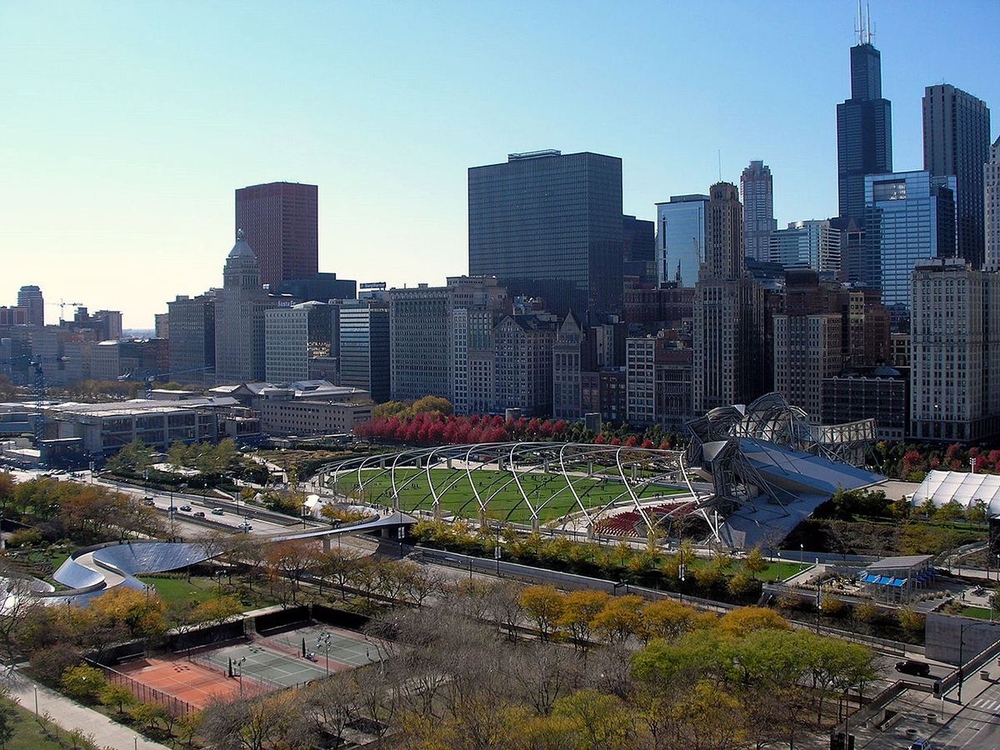

Sneak Out of Animal Cafe
IX.
I tell Bernard that I have to use the restroom. As he munches on his blueberry and broccoli salad, I jump off the seat and roam through the cafe. I watch the manager talk with Bernard, and Bernard starts barking. Two police officers approach the door. I turn around, moving towards the restroom as they follow me and talk on their walkie-talkies. There's a pet door on a unisex restroom door. I slip through it and lock the door shut. Suddenly, I feel a hand grab my collar and I see Rahul, wearing his bicycle helmet and sitting on the toilet with his feet in the litter box. "Gotcha, you rascal!" he shouts. He picks me up as I try to bite him and places me in the pet carrier that he had switched positions with the litter box. His overpowers me with his strength as I feel the carrier door close on my face. He opens the door and waves to the two police, carrying me in the pet carrier. They had captured Bernard as well; he's on a leash and trying to tug away with no avail.
One of the police officers speak: "We haven't found your cat burglar yet, but we did find their abandoned T-Rex costume on the sidewalk. It's a good thing that not only an anonymous caller tipped us about a burglary in your neighborhod, but also that your the bank alerted us once a $25,000 payment was made for a taxi with a celebrity president."
"What?!" Rahul replies.
The other police officer holds the T-Rex costume and a phone and speaks, "We also found a phone in the T-Rex costume. We believe its yours. You're a very lucky man, Mr. Khan."
"Thank you, officers." Rahul says, "I guess I can take that and my phone back--"
"Unfortunately we have to keep it to proccess as evidence. Standard operation procedure."
Rahul's face goes red as he looks at Bernard and me.

{kind=link}